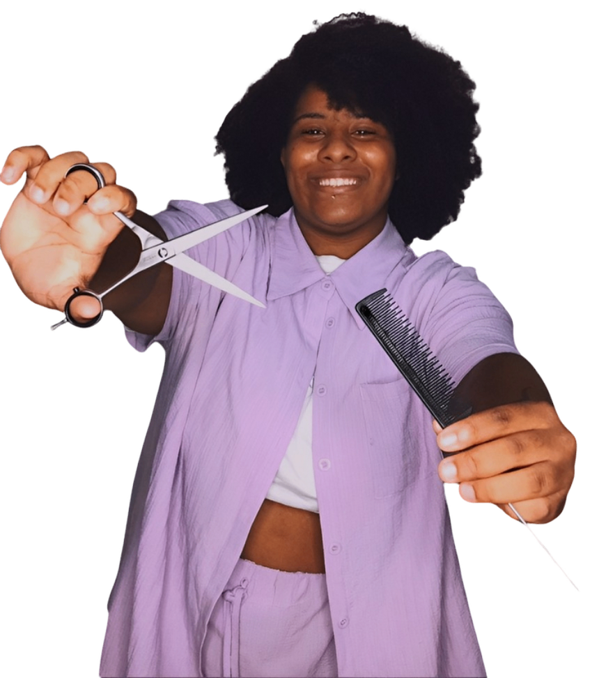
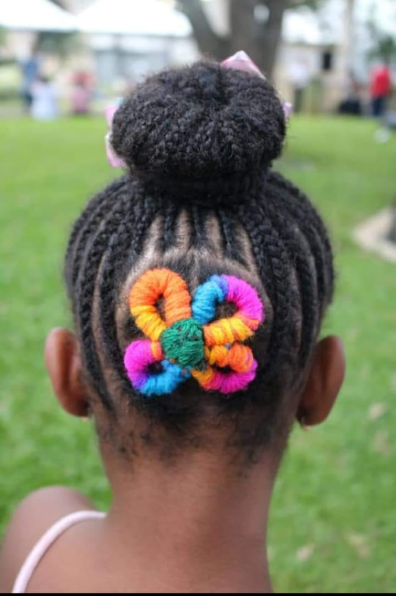

Quem Sou Eu?

Eu sou Ashley, atualmente tenho 20 anos!
Sou Trancista desde muito jovem, iniciei minha carreira com 16 anos e desde lá progredi muito.
Buscando sempre a minha melhor versão pra apresentar pra vocês e assim poder ajudar cada vez mais outras Trancistas,
já obtive mais de MIL atendimentos,
mas esse é só o começo.
Comecei a ter contato com as tranças desde muito nova, minha mãe sempre fez pra gente ir pra escola, ela fazia vários e vários desenhos.Mas nunca quis levar isso como profissão, minha mãe sempre trabalhou com carteira assinada e usava as tranças como forma de renda extra, então ela passou o mesmo pensamento pra mim, e eu cresci com isso.Mas olhando tudo o que passou, eu vejo que foi necessário ter sido assim porque se fosse de forma diferente não seria tão gratificante assim.
Quando eu entrei no ensino médio, fui crescendo e percebendo que precisava ajudar em casa e como eu não tinha idade pra trabalhar comecei a pensar "por que não?", não pensei muito, peguei dinheiro emprestado pra comprar um gel, um pente e elastiquinhos.
Não foi fácil o começo, mas quando eu comecei quase a escola inteira veio fazer trança comigo, até porque era época de carnaval. Ainda não tava feliz com o resultado, mas recebia muitos elogios mas pra mim não era o suficiente então sempre procurei trazer novos modelos e aprimorar meu "talento".
As tranças tiveram muito impacto na minha vida, ainda mais por ser uma mulher negra, é uma honra poder representar tudo isso que está no meu sangue.
Hoje eu moro sozinha, e ganho em média de 4 à 6 mil reais com essa profissão.

História
As tranças de cultura africana, carregam uma bagagem ancestral muito forte, já foram utilizadas como ferramenta de sobrevivência durante o período da escravidão, e hoje em dia ainda continuam trazendo o significado de sobrevivência, mas como forma econômia para muitas pessoas negras. Esse tipo de penteado, além dos significados que carregam consigo, para as mulheres negras são forma de proteção e aceitação diante o impacto direto com o racismo estrutural presente na sociedade, interferindo na sua autoestima, segurança e identidade.
Hoje em dia, fazer tranças além de transmitir o conhecimento ancestral também é uma forma de renda para muitas pessoas negras, os trancistas como são chamadas quem trabalha especificamente fazendo tranças, é uma profissão que vem crescendo cada dia mais.